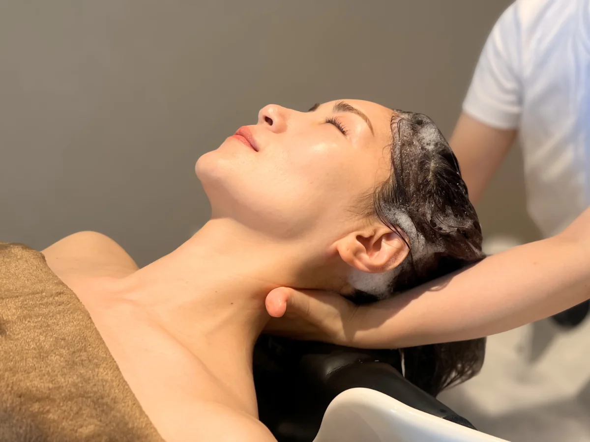
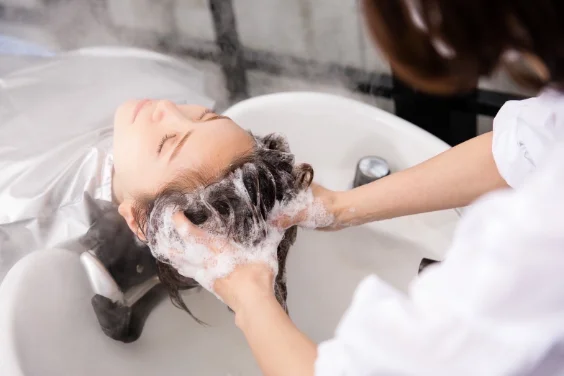
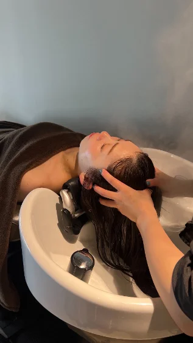
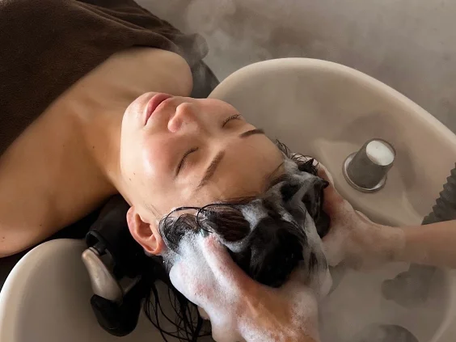
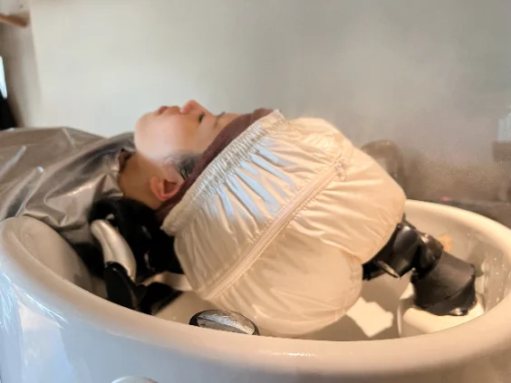
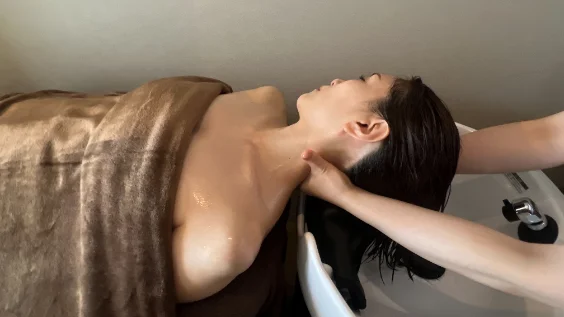
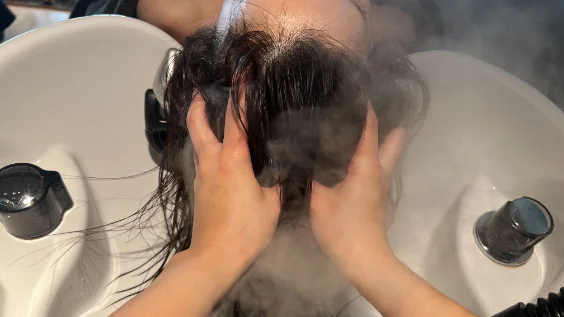
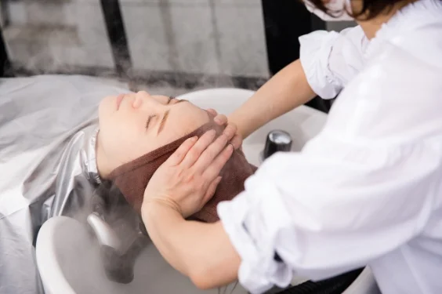

【整体】×【エステ】
頭部の筋肉のほぐし方も沢山ありますが、RuCOR.のオリジナルヘッドスパでは《整体》のもみほぐし、さする、マッサージ効果と《エステ》のリンパを流す、血流改善、リラックス効果、美容効果を用いて、より効果的でリラックス頂けるものとなっております。


ヘッドスパとは、頭皮マッサージにより血行を高めて流れを促進、頭皮を健やかに保つ美容法のこと。でも実は頭皮だけでなく髪、目や顔、首にも良い影響を与えてくれます。なぜなら頭部は３つの筋肉（前頭筋、側頭筋、後頭筋）がありこれらをほぐしてあげる事で繋がっている部分のお悩み解決に結びつきます。ツボ押しだけでなく、筋肉をほぐす事がポイントです。RuCOR.のヘッドスパではこれらを改善、予防します。

普段のシャンプーでは落としきれない毛穴の汚れ、髪の毛の汚れを落としていきます。お顔のファンデーションで考えてみましょう。クレンジングで落としきれていない状態にファンデーションを重ねても綺麗にはなりません。頭皮、髪の毛のトリートメントを効果的にする為にまずはクレンジングで「すっぴん」の状態に。

頭皮ケアの香りの良いシャンプーで洗います。普段のシャンプーより濃密なモコモコの泡で洗われるシャンプーはとても気持ちが良いです。さらにここでマッサージシャンプーを行いヘッドスパの準備運動を行います。

スチームミストでしっかり頭皮を温めていきます。頭だけまるでサウナに入った様な感覚に。温めることにより頭皮を柔らかくして血行を促進します。マッサージの効果も高めてくれます。

エステで言う「リンパを流す」にあたります。首にはリンパの溜まるところがあります。そこを先に流し、通り道をつくることにより全身を巡り、老廃物等を外に排出することができます。また首の胸鎖乳突筋を押し流すことで小顔効果、コリの解消に。

整体で言う「もみほぐし」にあたります。強めの力でツボを刺激し筋肉をほぐしていきます。最近はスマホ等の液晶画面で目が疲れてる方が多く顔周りが凝っていたり、常時マスクを着用しているので知らず知らずに耳周りが凝りやすいようです。その都度凝っているところを重点的に生え際から耳周り、頭の隅々までしっかりほぐしていきます。

整体の「さする」部分とエステの「リラックス効果」にあたります。人は【秒速5cm】でさすられる事で落ち着き、リラックスするC触覚繊維というものを持っています。RuCOR.ではこの【秒速5cm】の効果を用いたヘッドスパをご提供しております。
フルフラットになる、まるでベッドの様な寝心地。頭を支える枕もあり、長時間でも首への負担が少ないプレミアムなシートです。
美容室だから出来る同時施術。カット、カラーなど他の施術と併用でき、しっかりヘアケアしたい方にはトリートメントもオススメです。
呼吸が浅くなると自律神経が乱れ、寝付きや血の巡りにも影響が。ヘッドスパでリラックスし、深い呼吸を取り戻すきっかけに。